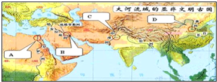
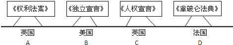

2015年北京市西城区中考历史试题 · 选择题 第1、2、3、4、5题
1．（2分）图中字母所指代的文明古国中，拥有金字塔和狮身人面像的是（ ）

A．AB．BC．CD．D
2．（2分）在沙特阿拉伯王国国旗上，用阿拉伯文写着：“万物非主，惟有真主，穆罕默德是安拉的使者。”这表明在沙特阿拉伯王国具有特殊地位的宗教是（ ）
A．佛教B．基督教C．伊斯兰教D．东正教
3．（2分）阿拉伯数字的发明者是（ ）
A．古代印度人B．古代罗马人
C．古代埃及人D．古代阿拉伯人
4．（2分）莎士比亚在作品中写到：“人是一件多么了不起的杰作！多么高贵的理性！多么伟大的力量！……宇宙的精华！万物的灵长！”他宣扬的核心思想是（ ）
A．理性主义B．人文主义C．民主思想D．科学思想
5．（2分）如图是反映近代西方民主发展历程的示意图。其中，上下内容对应错误的一组是（ ）

A．AB．BC．CD．D